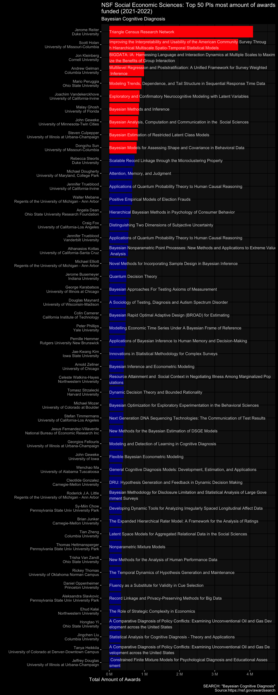

NSF Grant on Bayesian Cognitive Diagnosis
Data visualization using ggplot2
The NSF grant awards can be easily searched via NSF website. Check
Active Awardsand type “Bayesian & Cognitive Diagnosis” into the search box. Two things I’m really interested in: (1) Who as Principal Investigator (PI) obtained most NSF awards? (2) Which institute obtained most NSF awards?
Who get most awards
pi_amount <- awards |>
select(PI = PrincipalInvestigator, Org = Organization, Amount = AwardedAmountToDate, Title) |>
filter(PI!="") |>
mutate(Org = str_replace_all(Org, pattern = " -DO NOT USE", "")) |>
mutate(Amount = str_replace_all(Amount, pattern = "[\\$\\,]", "")) |>
mutate(Amount = as.numeric(Amount)) |>
mutate(Title = str_replace(Title, " ", " ")) |>
mutate(Title = str_replace(Title, "NCRN-MN: ", "")) |>
mutate(Title = str_replace(Title, "Collaborative Research: ", "")) |>
mutate(Title = str_replace(Title, "CAREER: ", "")) |>
mutate(Title = sub(x = Title, pattern = '(?<=.{85})', replacement = '\n', perl = TRUE)) |>
mutate(Title = str_replace(Title, "^ ", "")) |>
mutate(PI = paste0(PI, "\n", Org))
pi_amount_p <- pi_amount |>
group_by(PI) |>
summarise(
Amount_sum = sum(Amount),
Award_num = n(),
Title = Title[1]
) |>
mutate(PI = fct_reorder(PI, Amount_sum)) |>
arrange(desc(PI)) |>
head(50) |> # top 100
mutate(Highlight = c(rep(1, 10), rep(0, 40)),
rank = row_number()) |>
mutate(labels = paste0(round(Amount_sum/ 1e6, 1), " M"))
ggplot(pi_amount_p) +
geom_col(aes(x = PI, y = Amount_sum, fill = factor(Highlight))) +
# geom_text(aes(x = PI, y = 0, label = labels), hjust = 1, size = 3) +
geom_text(aes(x = PI, y = 0, label = Title), hjust = 0, size = 3, alpha = 0.8) +
scale_y_continuous(labels = scales::label_number(suffix = " M", scale = 1e-6), limits = c(NA, 4500000)) +
# scale_x_discrete(labels = PI, breaks = PI) +
scale_fill_manual(values = c("darkblue", "red")) +
labs(title = "NSF Social Economic Sciences: Top 50 PIs most amount of awards\nfunded (2021-2022)",
subtitle = "Bayesian Cognitive Diagnosis",
caption = 'SEARCH: "Bayesian Cognitive Diagnosis"\nSource:https://nsf.gov/awardsearch',
x = "PI & Orgnization", y = "Total Amount of Awards") +
coord_flip() +
ggdark::dark_theme_gray() +
theme(legend.position = "", text = element_text(size = 10), title = element_text(hjust = -0.1))